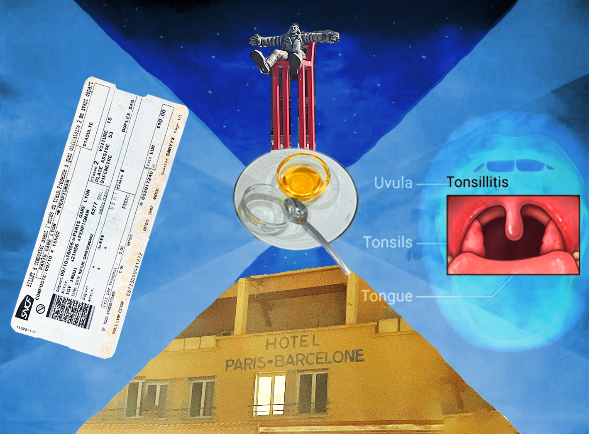

When the delayed train finally arrived in Paris I had already missed the last train to Barcelona, and found myself at the same ticket office where only six weeks earlier we had waited while Elliott bought a night train ticket to pick up the spare key of the apartment we were staying at and that he had lost the key of (will link key-log here when online). I asked how far I could make it that day, and they gave me a ticket until Perpignan, which I had never heard of before...
I decided to book a room in a hotel right next to the station, just for convenience, I had a light fever and a painful throat and wanted to be in a bed ASAP. This first night I will not care about the hotel, I thought. Cute, romantic hotels can come later in the trip. I just need to sleep and get to Spain.
Little did I know, Perpignan and specifically its train station, in 1963 had been proclaimed the centre of the universe by Salvador Dalí. Haha. Not Paris, not New York, but the train station of Perpignan. Allright. I thought. Nice start.
(In 1965, two years after this vision, Dalí completed Le Mystique de la Gare de Perpignan, a huge 3x4 meter oil painting that now hangs in the Ludwig in Cologne)
"Sooner or later, everyone changes trains at Perpignan. But the railway station in Perpignan held special significance for Salvador Dalí (1904-1989), who had proclaimed it to be the ‘Centre of the Universe’ after he experienced a vision of cosmogonic ecstasy there in 1963: ‘On 19 September 1963, standing in the railway station at Perpignan ... I had a precise vision of the constitution of the universe.’
For Dalí, the station in Perpignan became a place of genuine sanctity, a pivot of the cosmos that offered a unique perspective on the entire universe.(source)
The hotel next to the station was aptly called Hotel Paris-Barcelone, and it wasn't lugubrious at all, but in fact quite cute. I arrived there late at night with swollen tonsils, and the friendly receptionist gave me a free tea and two tiny bowls, one with honey and one with salt, and I showered and gargled with salt and then slept for ten hours, and many strange dreams.
The next morning I woke up and stepped out on the balcony and looked to the right and thought to myself: wow, this room has a view of the centre of the universe!
